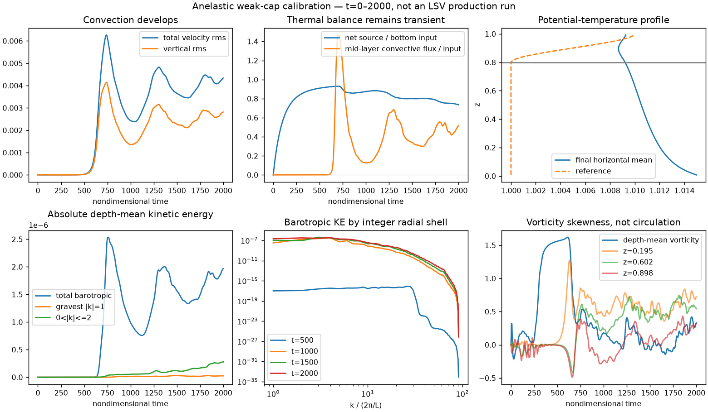

Anelastic convection: calibration, circulation and LSVs
Convection develops, but this short run does not establish an LSV. Thermal storage and partial cap erosion prevent release of the vortex branches.
Read the circulation and dipole analysis ↓
t=0–2000, nondimensional. Vorticity over passive tracer at three synchronized heights. Fixed scales, all 401 saved frames; positive ζ is cyclonic for f>0.
What completed, and what it establishes
Unity job 2058241 completed the dry anelastic weak-cap calibration through nondimensional t=2000, using one H100 80 GB for 15 min 19 s including startup and validation. This is a 128×128×64 calculation in a 2×2×1 box, with periodic x and y, constant f=+0.5, uniform bottom potential-temperature flux 9.375×10−7, ν=κ=2.5×10−5, and no imposed shear, β, moisture or drag. Initially the velocity is zero; a thermal boundary layer and small random thermal perturbations initiate convection. It is a nondimensional mechanism test, not a calibrated Jovian atmosphere.
Both vertical boundaries are impermeable and stress-free. The top diffusive thermal flux is zero. A smooth volumetric relaxation above z=0.8 restores the full local potential temperature toward the hydrostatic reference on a nominal time scale of 100. The reference potential temperature rises by 1% across the cap. This restores temperature rather than prescribing an immutable stratification; it can locally heat as well as cool.
| Diagnostic | Measured result | Interpretation |
|---|---|---|
| Elapsed convective turnovers | 6.71, using ∫urmsdt / 0.8 | Short calibration, not an equilibrated LSV experiment |
| Final local Rossby number | 0.0340 (volume-weighted spectral scale); 0.0317 (mass-weighted) | Rotation constrains convection; these are not the gradient Rossby number (0.222) |
| Final vertical Reynolds number | wrms×0.8/ν = 90.0 | Total-velocity Reynolds number is 138.8; do not interchange definitions |
| Final mean convective wavelength | 0.166, about 10.6 horizontal cells | Useful screening resolution; no convergence claim |
| Heat retained, t=1500–2000 | 77.7% of imposed bottom input | Thermal equilibrium has not been reached |
| Upper mean stratification | Negative dθ/dz at one third of sampled gradient locations above z=0.85 at t=2000 | The intended cap is partly eroded; not a wholly stable lid |
| Maximum potential-temperature budget residual after t=5 | 8.31×10−6 of bottom input | Storage is accounted for; not a total-energy or vorticity-budget closure test |
| Maximum Mach diagnostic | 0.114 over the run | Passed the configured 0.3 guard; not a proof of asymptotic accuracy |
| Final gravest-mode energy | 2.39×10−8, about 1.21% of depth-mean KE | No domain-scale condensate established |
| Final depth-mean vorticity skewness | +0.330 | Some cyclonic asymmetry, not evidence for a mature cyclone or repeatable sign selection |
Convection develops strongly around t≈600–750 and remains variable. Absolute energy at the larger horizontal scales increases, but these spectra do not measure nonlinear transfer: they cannot establish an inverse cascade. The benchmark of Guervilly, Hughes & Jones (2014) requires vigorous, rotationally constrained convection and finds slow LSV development. Its Boussinesq thresholds are context, not pass/fail criteria for this stratified, flux-driven configuration. In particular, our Re based on vertical velocity is about 90, not 139.
Decision: the calibration passed implementation checks but has not passed the physical conditions needed for the planned vortex branches. Do not treat the absent condensate as a negative test of LSV formation or anticyclone formation. Review the thermal trajectory and cap before extending or branching; increasing resolution alone will not remove the net heat input. The strong-cap variant remains withheld because its reference diffusive flux would exceed the imposed input. No additional simulation was launched for this publication.

Circulation, dipoles and a preferred vortex sign
The boundary/circulation distinction matters, but it separates two questions: which large-scale structures are allowed, and which sign occupies the concentrated core.
Salmon & Pizzo (2023), introduction makes the zero-boundary-circulation assumption explicit in its rectangular-domain discussion. It excludes the pure gravest single-extremum state and discusses condensation into the next mode, with two orientations selected by the initial condition. That is a conditional statement about the accessible modes and invariants, not a universal prediction for every domain called a rectangle.
The closest match to the minimal-mode example is Shukla, Fauve & Brachet (2016): a free-slip square, a sine-series streamfunction, and a 13-mode truncated Euler system. Its statistical calculation conditions on energy and enstrophy, without an additional zero-circulation delta constraint. The ψ11 mode carries a single circulation cell and nonzero integrated vorticity. Free slip and impermeability do not themselves impose zero circulation. One should not import that single-mode order parameter unchanged into a periodic zero-mean vorticity model.
There is an important qualification: Γ=0 alone does not generally force a symmetric dipole. Naso, Chavanis & Dubrulle (2011), §§V–VI explicitly find zero-circulation monopoles in a bounded square and dipoles in sufficiently elongated rectangles in their energy/circulation/enstrophy equilibrium problem. The transition occurs near aspect ratio 1.12 in that specific problem. A concentrated core can coexist with compensating opposite-sign vorticity. Also, a zero-circulation sum of wall modes need not exclude every coefficient of a mode having nonzero circulation: different modes can compensate. Thus geometry, invariant constraints and the chosen truncation must be specified together.
What is true of our configurations
For the current doubly periodic calibration, with the right-handed convention ζ=∂xv−∂yu,
Γ(z,t) = ∫∫ ζ(x,y,z,t) dx dy = 0, Γ₊ = ∫∫ max(ζ,0) dA = −∫∫ min(ζ,0) dA = −Γ₋.
This is a kinematic consequence of periodic velocity, independent of whether the flow is 2D, anelastic or convecting. It also holds for the density-weighted depth average because the reference density depends only on z. Across all 401 saved times and all three planes, |Γ₊+Γ₋|/(Γ₊−Γ₋) stays below 9.2×10−10 in the saved, centered Float32 vorticity. The positive and negative integrals balance even though their peaks and spatial organization can differ. This confirms the geometric constraint to saved-data precision; it is not a dynamical vorticity-budget closure.
The earlier 100-day heated f-plane case (configs/cascade100_f_heated.toml) and mirrored-f tests (configs/fplane-sign-v1) instead use periodic x and bounded y. For that channel,
Γ(z,t) = ∫ [u(x,y_s,z,t) − u(x,y_n,z,t)] dx.
Zero circulation is therefore not automatic. Those runs need a full-width circulation and wall-velocity audit before an equilibrium-mode interpretation. The previously published centrifugal analysis used the central 80% of the channel for its mean-vorticity statistics; those numbers cannot substitute for the full-domain integral. This publication has not recalculated the old channel circulation and does not establish that the earlier LSV was a boundary artifact.
Guervilly, Hughes & Jones (2014), §§3 and 5 directly demonstrate the relevant distinction: their horizontally periodic LSV has a concentrated cyclonic core balanced by more diffuse anticyclonic vorticity. Their horizontal mean vorticity is identically zero. This is compatible with Γ=0, while the preference for a cyclonic core remains a separate dynamical question.
Implication for our minimal model
Use admissible zero-mean modes for the periodic problem, or explicitly enforce the circulation constraint in a wall-mode expansion. Keep enough modes to represent both a concentrated core and its compensation. A single unconstrained monopole amplitude would build the desired morphology into the model. Conversely, a single periodic Fourier coefficient is not a reliable cyclone/anticyclone order parameter: translating the pattern can reverse its sign.
For a full-depth density-weighted horizontal mean U, impermeable top/bottom boundaries imply ∇h·U=0. In schematic form, its vorticity Z obeys
∂t Z + U·∇h Z = −[∇h × (∇h·R)]z + viscous / boundary-stress terms, R = density-weighted covariance of depth-dependent horizontal velocity.
The constant-f term drops out of this mean vorticity equation explicitly, but the convective stresses R can depend on f. In a periodic domain their curl-divergence forcing integrates to zero. A proposed local polynomial source must therefore be projected to zero mean (or obtained as a stress divergence). That enforces circulation compatibility; it does not derive the polynomial or show that it represents convection.
The theoretical target is consequently a sign-dependent redistribution of vorticity, or selective maintenance of a concentrated core, not creation of net circulation. Diagnose core concentration, opposite-sign compensation, translation-invariant skewness, and energy in the appropriate low modes separately. An f-reversed, reflected realization should reverse the signed statistics under the model symmetry. Geometry and zero-circulation equilibrium arguments alone cannot prefer cyclonic over anticyclonic cores: the convective-stress response or another explicitly justified physical term must supply that preference. These are requirements for interpreting the existing experiments, not authorization for a new simulation campaign.
Reproducibility and scope
The movie and diagnostics were generated on Unity in CPU job 2061144, from the unchanged saved output of GPU job 2058241. All 401 frames at t=0,5,…,2000 are included; the repeated restart frame at t=5 is deduplicated. The three heights are z=0.1953125, 0.6015625 and 0.8984375. The 2×3 movie uses fixed, full-range asinh scales: ζ/f width 0.02, and absolute tracer concentration centered at 0.1 with width 0.01. The tracer range is 0.049696–0.150043. No framewise rescaling or clipping is applied. Tracer contrast naturally weakens with mixing.
Barotropic energy is computed from the saved density-weighted depth-mean centered velocities; the four gravest Fourier wavevectors have |k|=2π/L. Spectra are not native energy-budget diagnostics. The heat-storage fraction uses the conservative potential-temperature content, not an independently closed total-energy equation. Successful restart, finite-state and thermal-source checks do not certify a closed vorticity budget.
Numerical summary · Movie provenance and checksums · Thermal/flow time series · Modes and circulation · Exact simulation source · Configuration · Analysis/render source
Archived runtime records: actual run metadata, GPU validation, physical checks, thermal design audit, Project, Manifest, and CUDA 12.2 overlay. Runtime project hashes were checked against the successful launch receipt. These archived files do not replace the repository-wide environment. The metadata field build_model_sha256 hashes model.jl; its older field named model_sha256 hashes calibration.jl.